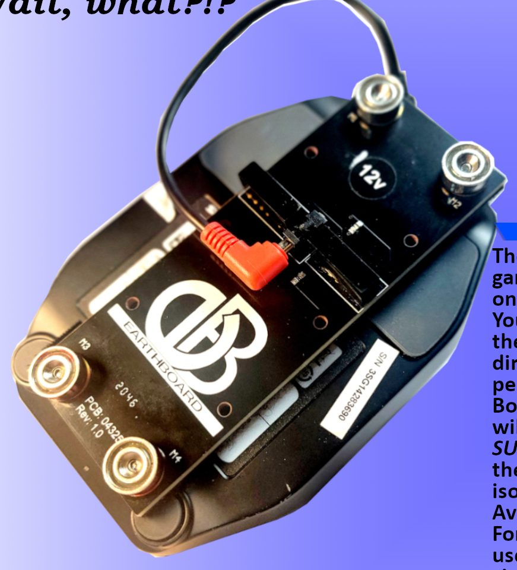

EBII System
Double-row battery-powered magnetic pedalboard system with 9 Gravity Boots
LED color Blue · included
Power upgrades Optional
Free Earthboard T-shirt Pick a size
What's in the box
- EBII board with built-in under-glow LEDs in your color
- 9 Gravity Boots (8 pedals plus the battery), with loop-side velcro attached
- 8 Gravity Boot Tethers and 1 Battery Tether
- Rechargeable 9V 10,000mAh battery with USB cable and mesh pouch
- Built-in cross-board patch cable that links the top and bottom rows
- 2 side battery ports and power in/out ports on both sides
You add your pedals, patch cables and the hook side of the velcro.
Set up in under 30 minutes

What our names mean
We gave our parts space-age names. Here's the plain-English version.
The board itself, with powered steel rails. Double row or single row.
Holds one pedal on the rails and powers it at 9V.
Isolates one pedal at 9, 12, 15, 18 or 24V. Replaces an isolated power supply.
Short DC cable from a boot to its pedal. It carries power, not sound.
Powers a floor pedal or links a second Earthboard to the same battery.
Balances a wide pedal across two spots.
EBII or EBII-SR?
| EBII System | EBII-SR System | |
|---|---|---|
| Rows | Double | Single |
| Pedals | Up to 11 plus a battery | Up to 6 |
| Gravity Boots included | 9 | 5 |
| Size and weight | 20 × 12.5 × about 5 in, 9 lbs | [confirm] |
| Price | $695 | $525 |
| Best for | Full rigs, cover bands, worship teams | Small rigs, students, fly dates |
| Need more room? | Link boards with a LifeLine Tether and run them on one battery. | |
My single board was so good I had to buy a double. Can't recommend this system enough and the customer service is top notch.
Keith G. · Verified buyer · Jan 2025Love the simplicity, the use of a battery, and the ease of switching out pedals.
Steven P. · Verified buyer · Sep 2024Hooked up some pedals I haven't used in a while because it's now easy and not a mess of patch cords.
Paul S. · Verified buyer · Jul 2024Complete your rig

